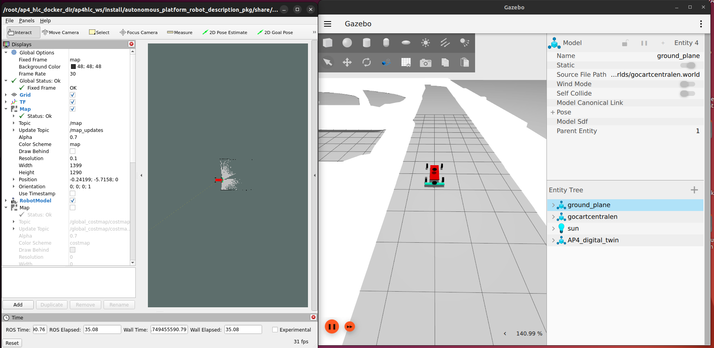
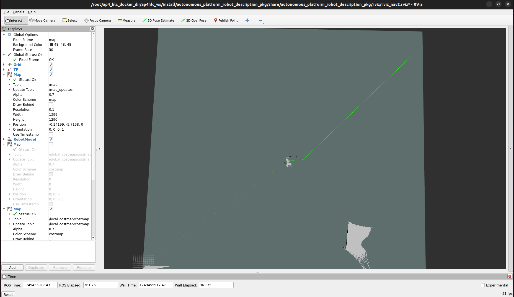
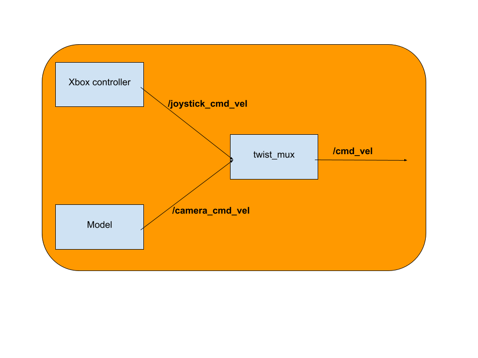

High-Level Control Software
This directory contains the high level control software which is responsible for sending high level control commands to the low level control software.
High-Level Control Hardware Requirements
To run the high-level control software it is preferable to run it on Linux. (Tested on Ubuntu 22.04). The processor should be of x86 type. It is preferable to have a dedicated graphics card if one has to run a lot of digital twin simulations.
See physics simulator Gazebo Simulator hardware requirements here.
To run high-level control on windows the docker graphics passthrough methodology needs to be modified. Currently it has only been setup for Linux. There will also be a greater performance loss when running a Linux based docker container on windows compared to Linux.
The high level software is the highest level software layer, it is supposed to be hardware agnostic. It should not care what specific hardware that is implemented on the physical autonomous platform.
The high level control software is supposed to tell the autonomous platform WHAT to do, whilst the low level control software is supposed to tell the platform HOW it should do it. This means that the algorithms developed / used in high level control software can be transferred to any physical platform as long as there exists an interface for it.
As an example: A high level software component wants the platform to move forward. It relays this on a generic ROS2 topic (i.e /cmd_vel) to the low level software, the low level software then processes it and sends commands specific to the physical platform to the embedded software layer. The low level software would then output hardware specific commands over the CAN bus network.

Above is a schematic diagram of how the software in high level control software should be designed. As of August 2023 only a simple digital twin is implemented so far. In 2025 the digital twin was fisnished and can be used to test och evaluate algortihms on.
How To Start simulation, LiDAR and SLAM for autonomous navigation
The high level software container should be started on the development laptop. NOT on the Raspberry Pi since it can not render the 3D gazebo simulation.
If any error occurs, TEST_DEBUGING.md, for troubleshooting.
Note: The host computer needs to be configured to pass graphical elements to the container. (before starting the container)
In a terminal, run:
xhost +local:root
Navigate to the correct directory in the terminal by:
cd Desktop/autonomous_platform/High_Level_Control_Computer
First, rebuild the container using
docker-compose build
The high level software container, with the configurations, can be started using
docker-compose up -d
Enter the running container by typing
docker exec -it ap4hlc bash
When inside the docker, run:
ros2 launch autonomous_platform_robot_description_pkg launch_robot_simulation.launch.py
Now two windows with Gazebo and RViz2 should open. It should look something like this:

To start the autonomous navigation of the Gokart around the gokart track, press the 2D Goal Pose in RViz2 and choose a goal point far outside the track, like this:

Now the gokart should start moving autonomously around the track until it has driven one lap around the track.
If you want to use the digital twin with IMU for localization as well, you need to change a configuration file name inside the simualtion launch file.
Do this by open launch_robot_simulation.launch.py in VS Code and scroll down to line 126 where the ekf_config is located. Here you should change line 129 to ekf_imu.yaml if you want to use IMU and ekf.yaml if you want to test without the IMU.
When changed in the launch file, restart the docker and run the simulation again.
exit
docker-compose down
docker-compose up -d
docker exec -it ap4hlc bash
ros2 launch autonomous_platform_robot_description_pkg launch_robot_simulation.launch.py
Path tracker - Record and results
To collect the results for the AP4 navigation a script has been created that calculates the difference betqeen the planned path and the path that the AP4 is taking during the drive. Run the path tracker at the same time as the simulation to record the data from the AP4 path and the planned path.
ros2 launch path_tracker launch_path_comparison.launch.py
This will save two csv files under /ap4_hlc_ws/logs/paths_csv.
To visualize the results, copy the name of the two csv-files into the actual_path_file and planned_path_file in the result.py which is in the path_tracker package. Then run result.py
python3 ./result.py
Simulation for imitation learning
The simulation used for imitation learning is a donkey car simulator and the setup can be seen in DONKEY_CAR_SETUP.md.
Collecting data from simulation
Collecting data from the simulation can be done in the following way.
cd Imitation_Learning/simulation_donkeycar
conda activate donkey
python manage.py drive --js
the --js flag is for using the xbox controller, otherwise the car can be controlled from local host at: http://localhost:8887/drive
The simulation used for imitation learning is a donkey car simulator and the setup can be seen in DONKEY_CAR_SETUP.md.
The collected data is placed in /simulation_donkeycar/data.
See "training phase" to learn how to train the model using this data.
Data collection and autonomous driving
The data collection is recording all the necessary data from ROS by subscribing to the topics. The current information being saved are the imu, color image, depth camera, steering angle and throttle signal. The data is saved with both ROS bag and with the script called data_collection.py in /High_Level_Control_Computer/ap4_hlc_code/ap4hlc_ws/src/high_level_control. ROS bag is recording all the data the topics receives while data_collection.py is synching the messages together. ROS bag can be used as a backup if the data is lost, how to replay the data and save it can be read in Autonomous_Platform/README.md.
The framework for autonomous drive is implemented in high level control. To get started, a model has to be trained for the gokart based on recorded data in /High_Level_Control_Computer/ap4_hlc_code/ap4hlc_ws/src/imitation_learning/train_DAgger.py, this can be done for both simulation and for real world tests. When a model is created it is saved to both /High_Level_Control_Computer/ap4_hlc_code/ap4hlc_ws/src/imitation_learning/simulation_donkeycar for testing in simulation and to High_Level_Control_Computer/ap4_hlc_code/ap4hlc_ws/src/imitation_learning/models for testing in real world environment with the gokart. The name of the model will depend on what inputs are selected in train_dagger.py.
To start the autonomous drive for the gokart or to collect more data for DAgger, start the high level docker, open a new terminal in High_Level_Control_Computer and run:
source start_data_collection.sh --param <param>
The params can either be:
- default - Collect data from driving the AP4, storing all actions and observations for training
- validation - Collect data from driving the AP4, storing all actions and observations for validation
- color - Starting high level model, setting the inputs to be color camera and imu and saving human interactions for training color HG-DAgger model
- depth - Starting high level model, setting the inputs to be color camera, depth camera and imu and saving human interactions for training depth HG-DAgger model
- orb - Starting high level model, setting the inputs to be color camera, orbs and imu and saving human interactions for training orb HG-DAgger model
This script starts the following in different terminals:
- Camera docker - starts to publishing information from the imu, depth camera and color camera to ROS.
- ROS bag - starts to record the information in ROS bag
- Data Collection - Recording and synching the data and then saving as a pickle file.
- Test script - Starts a test script to check the communication between RPi and laptop, checks for missing topics and nodes etc.
- High Level Model - Starts on (color, depth and orb), taking inputs from the sensors and predicting the actions.
When no more data should be collected it is important to close data_collection and ROS bag with CTRL+C for the data to be saved correctly!
The model will now start to publish the predicted actions to the topic /camera_cmd_vel in ros and the gokart will start to drive. The control of the gokart can always be overtaken by the user by using the Xbox controller. When the Xbox controller is used data_collection.py will start to record the data and save it in /High_Level_Control_Computer/ap4_hlc_code/recorded_data/(orb, depth or color) depending on the param chosen when the script was started. This is done to be able to update the policy of the model where it made bad predictions.
Twist_stamper
The joystick_cmd_vel data published by the Hardware_Interface_Low_Level_Computer is of the message type twist and not twist_stamped. As this means the data does not contain a time stamp which is necessary for data_collection.py this is solved by the package twist stamper https://github.com/joshnewans/twist_stamper. Twist stamper offers two nodes: one for adding a timestamp and another for re- moving a timestamp from a twist message. The timestamp addition node subscribes to a topic, timestamps the received message, and publishes the stamped message to a new topic. The twist_stamper not is automatically started via the hlc_startup.bash in the HLC. As in:
ros2 run twist_stamper twist_stamper --ros-args -r cmd_vel_in:=joystick_cmd_vel -r cmd_vel_out:=cmd_vel_stamped
Twist_mux
To be able to take over the control manually twist_mux is used. Twist_mux takes in n number of twist messages, prioritize them and sends the highest prioritized message to /cmd_vel. Twist_mux is started automatically in hwi_startup.bash but can also be manually started in the high level control docker by running:
ros2 run twist_mux twist_mux --ros-args --params-file ./model/twist_mux_topics.yaml -r cmd_vel_out:=cmd_vel
Twist_mux takes in two topics for now which is /joystick_cmd_vel (commands from the Xbox controller) and /camera_cmd_vel (commands from model). Topics can be changed or added in twist_mux_topics.yaml in ../High_Level_Control_Computer/ap4_hlc_code/ap4hlc_ws/src/autonomous_platform_robot_description_pkg/high_level_control (if twist_mux is started in high level docker) and in ../Hardware_Interface_Low_Level_Computer/ap4_hwi_code for automatic start up.
The Xbox controller has the highest priority which means that the control from the model can be overridden at all times.

More information about twist_mux can be read here: Link official twist_mux documentation.
Extend High Level Software
This document aims to describe to process of how to extend the high level control software.
Before starting to develop and adding code to the high level control software you need to first make sure you need to add something here.
If you;
- Want to do something with the digital twin
- Work on high level hardware agnostic autonomous drive algorithms
- Evaluate autonomous drive algorithms
- Are NOT adding new hardware
- Are NOT interfacing with the physical platform
Then you are in the right spot!!
If not, take a look at Hardware_Interface_Low_Level_Computer or CAN_Nodes_Microcontroller_Code, maybe you intended to add functionality there!
Prerequisites
In order to start adding functionality it is recommended to have a basic understanding of:
- C++ OR Python development
- docker containers (How to start, stop, restart and configure)
- Linux - The container software environment is mainly navigated in through a terminal
- Robot Operating System 2 (how to create packages and start new nodes)
Software wise, you need to have the following installed:
- docker
- git
- VSCode (recommended but any IDE may be suitable)
Hardware wise, it is recommended you have:
- Linux based x86 host computer, preferably with dedicated graphics (not a must)
Add a New Functionality
First of all make sure you have read the general design principles document for autonomous platform located at autonomous_platform/HOW_TO_EXTEND.md. This document takes precedence over anything written in this document in order to unify the development process across all software layers.
Software functionality is created inside ROS2 packages. These can be seen as code libraries that are configured to run and perform a specific task within a ROS2 network.
Training Phase
Installing imitation learning library
Make sure that you are in the conda environment:
TODO : hopefully with docker commands and requirements.txt
pip install imitation
You might need to install stable baselines3 as well.
pip stable-baselines3
Training imitation learning
Simulation data
In the case of data from simulation the data is stored in simulation_donkeycar/data.
To test a trained model in simulation, place the trained model file in simulation_donkeycar and run the following commands.
collecting data from the simulation can be done in the following way.
python3 test_scripts/ppo_train.py --sim ~/projects/DonkeySimLinux/donkey_sim.x86_64 --test
The training can then be started by running python train_DAgger.py simulation .
Real world
To train the imitation learning models from the data collected via source data_collection.sh, start the high-level docker by standing in High_Level_Control_Computer and running docker-compose up then in a new terminal run:
source start_training --param <param>
The params can either be:
- color - Setting the inputs to be color camera and imu
- depth - Setting the inputs to be color camera, depth camera and imu
- orb - Setting the inputs to be color camera, orbs and imu